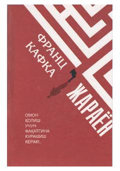

JInsonning byurokratik tizim va adolatsizlik qarshisidagi kurashi haqidagi falsafiy roman.
Asar bosh qahramoni Jozef K.ning hech qanday sababsiz hibsga olinishi va uning tushunarsiz sud jarayonlari girdobida qolishi tasvirlanadi. Roman insonning jamiyat va byurokratik tizim qarshisidagi ojizligi hamda hayotning ma'nosizligi kabi falsafiy mavzularni chuqur ochib beradi.